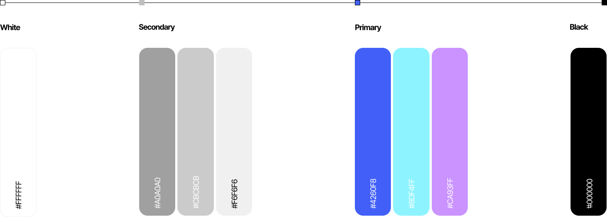
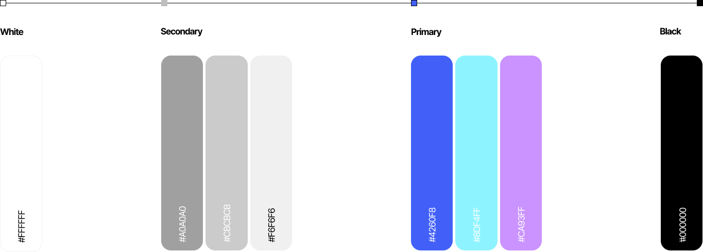

OVERVIEW
감정 관리,
더 이상 선택이 아닌 필수
전 세계 2억 8천만 명이 우울증을 겪으며 감정 케어와 정신 건강 관리의 중요성
이
커지고 있고, 명상·기분 추적·상담 등 다양한 기능을 갖춘 정신 건강 앱 시장도
스마트폰 보급에 따라 빠르게 성장하고 있습니다.
일기와 AI를 통한
'스마트 감정 케어 서비스'
일상 속 감정과 스트레스를 관리할 수 있도록 이 서비스는 감정을
자유롭게 표현하고 정리할 수 있는 개인 공간을 제공합니다.
감정 변화 트래킹과
AI 분석을 통해 사용자의 감정 흐름을
시각화하고 정밀하게 파악한 뒤 맞춤형 피드백과 케어 콘텐츠를
제공해 자기 이해와 정서적 회복을 돕습니다.


USER RESEARCH
우리 서비스가 사용자의 감정 표현에
어떻게 도움이 될 수 있을까?
사람마다 감정을 표현하고 해소하는 방식은 다양하며 최근엔 감정 기록 앱이나 AI 케어 도구
등 자기 돌봄 방식도 확장되고 있습니다. 우리의 서비스는 이러한 감정 표현 스펙트럼을 포용
해
누구나 자신에게 맞는 방식을 찾고 실천할 수 있도록 돕습니다.


I.A
우리 서비스 MOODVERSE를
한 눈에 알아보세요!
MOODVERSE의 IA 구조는 사용자에게 직관적인 흐름을 만들고 감정 기록과 분석 기능을 쉽게
탐색할 수 있도록 설계되었습니다. 서비스 기획부터 사용자 경험까지 명확한 방향성을 잡기 위한
핵심 설계 도구입니다.

UI ELEMENTS
우리 서비스 MOODVERSE의
제한된 그리드 시스템이에요
 


OCCUPANT PAGE
MOODVERSE에선
다양한 서비스를 제공해드립니다.
감정 우주를 기반으로 한 서비스 구조 수립
MOODVERSE는 사용자가 감정을 자연스럽게 탐색할 수 있도록 기록에서
분석 확장까지의
감정 흐름을 단계별로 구성하였습니다. 각 기능은 감정의
상태를 시각적으로 표현해 사용자 몰입감을 높입니다.


하루의 감정이 모여, 나만의 우주가 된다.
MOODVERSE
[ Service Planner ]
[ UX ]
[ UI ]
[ Developer ]
권혁민 길정준 양채윤
권혁민 길정준 양채윤
권혁민 길정준
양채윤